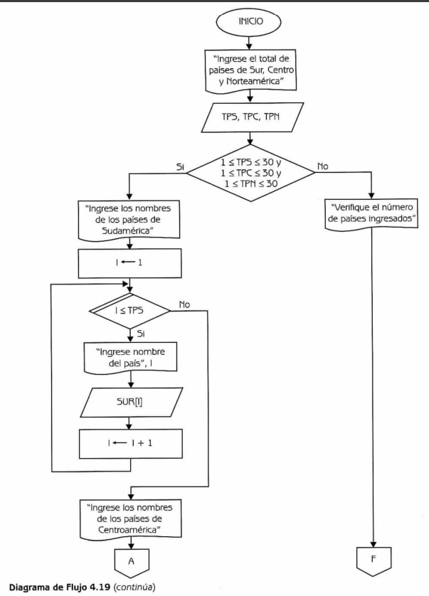
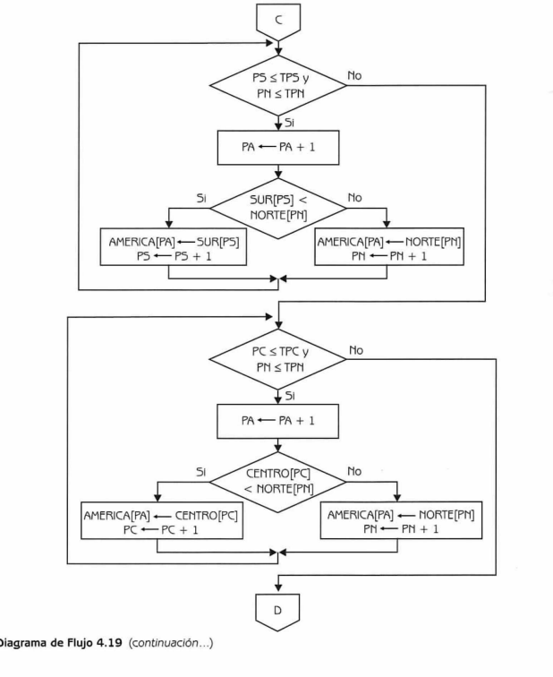
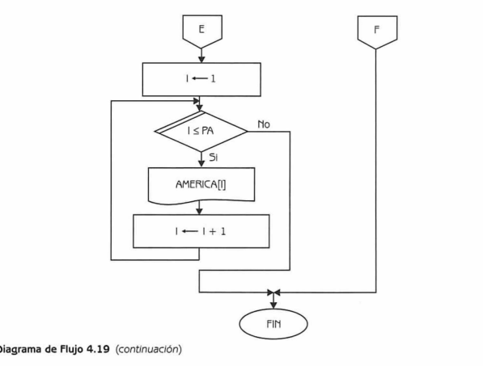

Descripción
Se tienen tres arreglos: SUR, CENTRO y NORTE,
que almacenan los nombres de los países del Sur, Centro y Norteamérica respectivamente.
Los tres arreglos están ordenados alfabéticamente.
Se debe escribir un algoritmo que mezcle los tres arreglos anteriores formando un cuarto arreglo
llamado AMERICA, en el cual aparezcan los nombres de todos los países del continente
ordenados alfabéticamente.
Datos del problema
SUR[1..TPS], CENTRO[1..TPC], NORTE[1..TPN]
| Variable | Rango |
|---|---|
| TPS | 1 ≤ TPS ≤ 30 |
| TPC | 1 ≤ TPC ≤ 30 |
| TPN | 1 ≤ TPN ≤ 30 |
Donde:
SUR,CENTROyNORTEson arreglos unidimensionales de tipo cadena de caracteres que almacenan los nombres de los países de América del Sur, Centro y Norte respectivamente.
Diagramas de flujo



Código Java
// src/Problema4_11.java
import java.util.Arrays;
public class Problema4_11 {
public static String[] mezclarArreglos(String[] sur, String[] centro, String[] norte) {
int total = sur.length + centro.length + norte.length;
String[] america = new String[total];
int index = 0;
for (String pais : sur) america[index++] = pais;
for (String pais : centro) america[index++] = pais;
for (String pais : norte) america[index++] = pais;
Arrays.sort(america); // Ordena alfabéticamente
return america;
}
public static void main(String[] args) {
String[] SUR = {"Argentina", "Bolivia", "Brasil", "Chile"};
String[] CENTRO = {"Belice", "Costa Rica", "El Salvador", "Guatemala"};
String[] NORTE = {"Canadá", "Estados Unidos", "México"};
String[] AMERICA = mezclarArreglos(SUR, CENTRO, NORTE);
System.out.println("Países del continente americano ordenados alfabéticamente:");
for (String pais : AMERICA)
System.out.println(pais);
}
}
Resultado esperado
Argentina
Belice
Bolivia
Brasil
Canadá
Chile
Costa Rica
El Salvador
Estados Unidos
Guatemala
México
Este programa combina los tres arreglos unidimensionales de cadenas (SUR, CENTRO y NORTE)
en uno solo llamado AMERICA, y utiliza el método Arrays.sort()
para ordenarlos alfabéticamente.
De esta forma, se obtiene una lista completa y ordenada de los países de América.